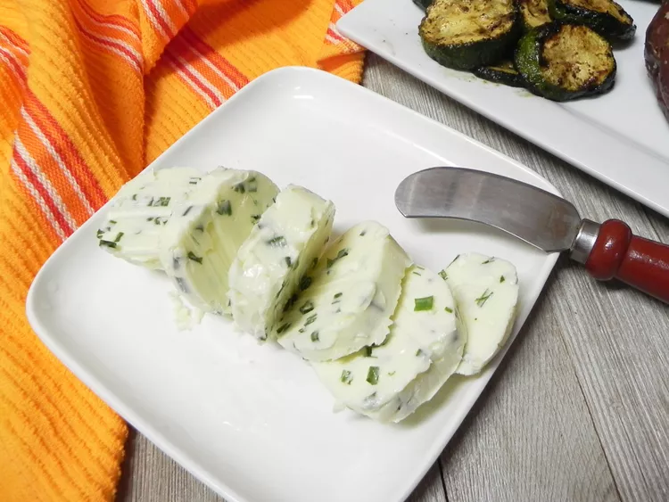

Chive Butter

This chive compound butter is a great way to use an herb that just keeps
giving all summer long. It goes great on grilled steak, baked potatoes,
grilled corn, or any grilled vegetable.
Ingredients
- 1/2 cup unsalted butter, softened
- 2 tablespoons finely chopped fresh chives
- 1 pinch salt
Directions
-
Place butter in a small bowl at room temperature until soft, about 1
hour; add chives and salt. Using a silicone spatula, mix until evenly
combined.
-
Lay a large piece of plastic wrap on a clean work surface; place butter
in the middle. Lift one side of plastic and roll to slowly form a log
shape. Press the sides in and continue to roll. Twist the sides up to
seal.
-
Refrigerate butter for 1 hour before using. Slice into rounds and serve
over desired food.